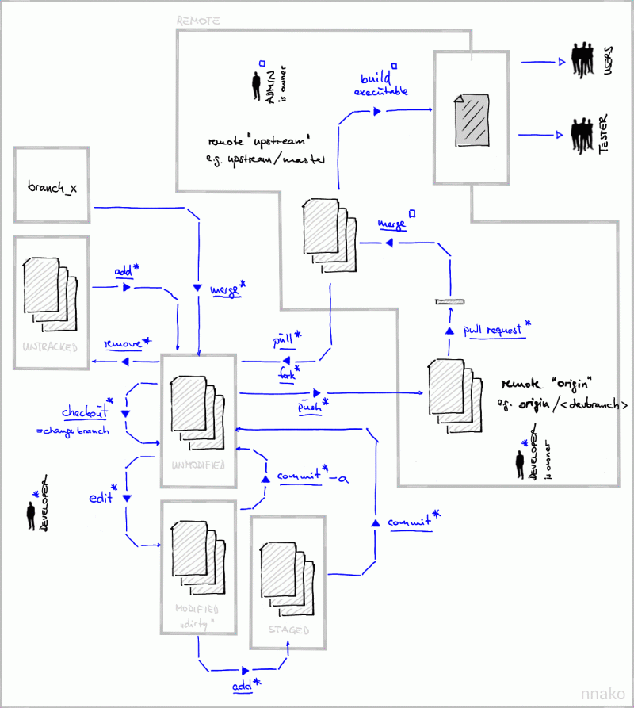

Freeplane
Freeplane is a free and open source software application that supports thinking, sharing information, getting things done at work, in school and at home. It provides you a set of tools for mind mapping (also known as concept mapping or information mapping) and navigating the mapped information. Freeplane is also a more robust and superuser alternative to Xmind, Mindmeister, and similar mind mapping software.
Freeplane is written in Java using OSGi and Java Swing. It runs on any operating system that has a current version of Java installed. It can be run locally or portably from removable storage like a USB drive.
Download and install the latest version over at Sourceforge. The change log is available here.
If you would like to report a bug, you can go report it over at Issues
Hop on to our Discussions if you have any questions, ideas, or thoughts you'd like to share. Contributors are very much welcome, of course!
Features rundown


How to get help
Freeplane is a non-commercial project. It lives by our active and vibrant community, where we try to support each other in order to develop and provide an outstanding knowledge management application. Please, feel free to discuss Freeplane and its features with other interested Freeplane users. For this purpose, we provided two forums (see structure picture on the right):
We invite you to do the following things:
in our DISCUSSIONS FORUM
- discuss the usage of existing features
- discuss the suitability of new features
- discuss the development of existing scripts and new ones
New bug reports go into the bug reports
New feature requests go into the feature requests
Freeplane's old user forums are archived here and here.
Getting started
Install

Download Freeplane now!
(this downloads the stable version 1.10.3)
change log
Download last development versions ( preview )
→ Find out which distribution better fits your requirements.
First steps
- to create a new node, press
enter - to add text to the new node, start typing and press
enterwhen you are done - to navigate between nodes, use the arrow keys
- to fold/unfold a selected node, press
space - to move nodes, drag and drop them with the mouse
- For more details, see the rest of this documentation and ask questions in the Freeplane forum.
Mind map examples
How to Start Contributing
We're currently looking for contributors for developing the documentation. If you can write simple step-by-step guides, translate existing text into English, transfer text from our old documentation into the new one, then we could use your help. You can start a discussion post (in the docs project) saying you want to contribute to the documentation and the Freeplane team will respond and assist you.
If you have other ways of contributing: developing an addon, sharing your pre-configured mindmap, or suggestions about future development, please feel free to join us in the Discussions
Every contributor or team member freely decides what task they are going to work on. However, for making the best decision regarding development, it's advised that we first propose and suggest the idea to the community through a discussion post as to enable early discussion and community feedback.
Join the Freeplane team not only as user but maybe as a
- developer (coder and designer)
- tester (writer of tutorials, screencasts and help texts)
- translator (various languages)
- forum moderator (care for a specific subject)
Freeplane's builtin functionality can be extended by Groovy and JavaScript scripts. Starting with Freeplane 1.3.5_05 you can use many other languages, e.g Python. This page gives a first impression what you can do with Groovy scripting and helps to get started.
With Freeplane scripting you can
- write your own functions and use them from the menu or via keyboard shortcuts,
- use formulas in your map to compute stuff like in Excel, and
- create add-ons to share it with other users,
- have init scripts executed on startup that changes Freeplane's behavior (since Freeplane 1.5).
Most people use scripting to automate otherwise tedious procedures like creating a node with a special style and some standard attributes. But much more is possible with scripting.
TOC
External Groovy scripts can be integrated simply by placing them in the scripts subdirectory of the Freeplane homedir. Such scripts can be used like any other built-in function of Freeplane.
After some preparation we'll create the first script.
Preparation
A newly installed Freeplane installation is almost ready for scripting:
-
The scripts directory is created in the User Configuration Folder which you can open via Tools > Open user directory.
-
The scripts directory is empty, initially. On startup, the directory is automatically searched for ".groovy" files.
-
Scripting is disabled by default, but before enabling it, let's take security into consideration.
-
After having reflected on security, navigate the menu to Tools > Preferences > Plugins> Scripting and:
- set ''Script execution enabled'' to ''Yes''
- enable ''Permit File/Read Operations (NOT recommended)'' - despite the warning.
- These changes take effect without restarting Freeplane and only need to be done once.
Select an editor
You will need a text editor. For the first steps presented on this page any editor will do, such as Notepad on Windows (though the free Notepad++is much better), Sublime Text or TextEdit on Mac OS X. You can find an overview of editors with Groovy support on Stackoverflow and on the Groovy website.
Freeplane also has a small script editor built into it. It is reached through Tools->Edit Script. You can run the scripts directly in the editor and store them as attributes of the node you are working in. But such map local scripts are most useful for quick tests since you can not write the scripts directly to ".groovy" files.
For ambitious scripting projects or if you have Java/Eclipse know-how you should have a look at the page on Scripting environment setup.
The first script: HelloWorld.groovy
"Hello World" is the traditional first program when taking up a programming language. Let's create a Groovy Freeplane version of it:
- Create an empty Groovy script file named HelloWorld.groovy in your scripts directory (remember that you can get there via Tools > Open user directory). The suffix .groovy is mandatory.
- Open HelloWorld.groovy in an appropriate editor as detailed above.
- Copy the following script into the file and save it.
node.text = "Hello World!"
- Execute the script by selecting Tools->Scripts->Hello World->Execute on one selected node. (Never mind the difference between the Execute ... variants; we'll come to that later.)
- The text of the selected node will be changed to "Hello World!".
- To restore the original, press Ctrl-Z.
- If you like try the other "Execute..." menu items. Test the influence of selecting multiple nodes. Always press Ctrl-Z to revert the changes.
Hello Controller
Every script is given the variables
| **node** | set to the currently selected node |
| **c** | tool box for various tasks relating to the map or Freeplane altogether |
These give access to the two most important bits of a map. In HelloWorld we used node, which gave access to the selected node.
Now we'll change HelloWorld.groovy to use the second, the Controller variable c:
- Copy the following script into the file and save it:
c.statusInfo = "Hello World!"
- Execute the script by selecting Tools->Scripts->Hello World->Execute on one selected node.
The "Controller" manages the status bar. By assigning "Hello World!" to the Controller attribute "statusInfo" we are able to print text to the status bar.
The scripting API
The variables node and c are "objects" with a list of attributes (like "text", "details" or "style") and methods that operate on the object, like "addConnector()", "createChild()" or "moveTo()". The "type" of the object decides on the list of attribute of attributes and methods an object has. "node" is of type Proxy.Node while "c" has the type Proxy.Controller.
To get started with Freeplane scripting you have to get slowly accustomed to the Groovy syntax and the Freeplane specialities too. The types and objects that Freeplane supports are defined by Freeplane's scripting API. You can learn it step by step: Very little is required to write useful scripts.
An important resource is the built-in scripting documentation that is available via Help->Scripting API. Open it now and search for the statusInfo attribute at Scripting API->Proxy->Controller->statusInfo: String (w). The text means: The Controller has an attribute statusInfo that only can be written to (w), that is you can't find out what is currently displayed on the status bar. The attribute has type String (either use "double quotes" or 'single quotes'). If you unfold the node you see void setStatusInfo(String). That means that
c.statusInfo = 'Hello World!'
and
c.setStatusInfo('Hello World!')
are equivalent. But the first "attribute" style is preferable since it is clearer. The clickable links in the "Scripting API" map carry to the respective location in the detailed API description which might be a bit overwhelming at this point.
Setting links
In the "Scripting API" map, near to statusInfo you find the userDirectory attribute. You can use it to add a link to this directory to your map. Create a new script file addLink.groovy in the script directory with the following content:
node.link.file = c.userDirectory
Here an slightly extended version that adds an external link to the selected node(s) and creates a node with a local link back to its parent node:
node.link.text = 'http://freeplane.org/wiki/index.php?title=Scripting'
This script creates a local link back to its parent node:
node.link.node = node.parent
In the next section we'll see what the "@ExecutionModes" line is about.
Execution modes
For each script we had three submenu entries of "Hello World". These entries are different with respect to multiple selected nodes:
*In the case of Execute on one selected node a script is executed only once no matter how many nodes are selected. It's best to be used when only a single node is selected since in this case the node variable of the script is set to the selected node. If multiple nodes are selected then node is set to one of the nodes arbitrarily. That is, you shouldn't count on the selection if multiple nodes are selected. *With Execute on all selected nodes it is called once for each selected node (with node set to the respective node) and with *Execute on all selected nodes, recursively the selection will be implicitly extended by all child trees of the selected nodes.
If we chose Execute on all selected nodes for the first version of "Hello World" then the text of all selected nodes changed. - Probably what you expect. By adding the line
// @ExecutionModes({ON_SELECTED_NODE})
all other choices would be suppressed.
The second "Hello World" version printed to the status bar. This only has to happen once so here Execute on one selected node is the right choice and we have to add the line
// @ExecutionModes({ON_SINGLE_NODE})
It's a good idea to put the "annotations" at the beginning of the script. (In section Simple text replacement we will see an exception.) ON_SELECTED_NODE_RECURSIVELY applies a script on any node in the branch that has a selected node as root. You can also enable more than one mode by concatening them with commas:
// @ExecutionModes({ON_SELECTED_NODE, ON_SELECTED_NODE_RECURSIVELY})
Note that for Groovy this is a comment. - This line is only interpreted by Freeplane. Omitting the // will result in a Groovy compilation error.
Menu locations
Scripts can determine to which menu or submenu a script will be added. Even the menu title can be set (although the standard file name to menu title translation should be enough in most cases):
// @ExecutionModes({on_single_node="/menu_bar/help[scripting_api_generator_title]"})
You can find out about the internal menu keys using the Developer Tools > Menu item info.
Per node execution: addIcon.groovy
Now let's use the node variable again in our next script, addIcon.groovy (restart Freeplane to see it in the menu). This script will add the "button_ok" icon to any selected node:
node.icons.add("button_ok")
// @ExecutionModes({ON_SELECTED_NODE})
This will add the "check" icon to each selected node. Hopefully it's clear that the execution mode Execute on one selected node makes no sense in this case. So let's remove this from the "Extra" menu:
// @ExecutionModes({ON_SELECTED_NODE, ON_SELECTED_NODE_RECURSIVELY})
node.icons.add("button_ok")
(To see the change in the menu you have to restart Freeplane.)
We will extend this script now a little further to only set the icon if the node text contains the words "yes" or "OK" (case insensitively):
// @ExecutionModes({ON_SELECTED_NODE, ON_SELECTED_NODE_RECURSIVELY})
if (node.text.toLowerCase().matches(".*\\b(yes|ok)\\b.*"))
node.icons.add("button_ok")
Note that node.text makes use of the special (compared to Java) attribute handling - see section On Groovy properties and the Scripting API.
The status bar again: getIconName.groovy
Finding the proper name of an icon may be a bit difficult. One way is to use the wanted icon in some map and to look it up in the sources. The XML for a node with an icon might look like that:
<node TEXT="done" ID="ID_789648746" CREATED="1239285242562" MODIFIED="1242658193277">
<icon BUILTIN="button_ok"/>
</node>
This script writes the icon names of the selected node to the status bar:
c.statusInfo = "Icons: " + node.icons.icons
Note: For built-in icons, the icon name is the same as the corresponding graphic file name, that may be found here.
Formulas
Starting with Freeplane 1.2 one use scripts as Formulas directly in the node core like in Excel. Type this formula in the node core:
= "Icons: " + node.icons.icons
This will display the result of the formula instead of the formula itself.
Notes:
- The equal sign has to be the very first character in the script.
- On typing the equal sign as the first character a special script editor pops up which supports syntax highlighting.
Data parsing and formatting
TODO: add text
node.object = 40
def answer = node.to.num0 + 2
node.text = '2013-02-15'
c.statusInfo = node.to.date + 1
node.object = 42
node.format = '#.00'
c.statusInfo = format(42, '#.00').toString()
Navigation and iteration
Many useful scripts operate only on the current/selected node. But most scripts need to access multiple nodes. The scripting API provides methods for accessing special nodes:
- node.parent - parent node
- node.map.root - root of the map
For example this script prints the text of the parent node to the status bar:
c.statusInfo = node.parent.text
Other methods return node lists:
- children - list of all children of a node, maybe empty
- c.findAll() - all nodes of the map in breath first order
- c.findDepthFirst() - all nodes of the map in depth first order
- c.find(
) - all nodes for which returns true.
The use of this methods requires some knowledge of Groovy collections.
Filtering
The most important concept is that of "closures", small code blocks that are used for filtering and modification of the element currently being iterated over. Let's start with filtering:
def matches = c.find{ it.text.contains('ok') }
c.statusInfo = matches.size() + " nodes contain 'ok'"
The method find has a closure argument which is applied to all nodes in the map. All nodes for which the closure returns true are returned as a new list which is assigned to the matches variable. In the closure the "current item" has a default name it. As c.find iterates over nodes it is a Node that has the attribute text which is a String that has a method contains() returning true if OK is contained somewhere in the text, like in "grok" or "it's ok".
Transformation
Many Groovy methods transform lists/collections into others:
def squares = children.collect{ it.to.num0 * it.to.num0 }
and others transform lists into single values:
def sumOfSquares = children.sum(0){ it.to.num0 * it.to.num0 }
When using sum() it's always a good idea to give it a start value since if the node had no children sumOfSquares would be null instead of 0.
Clones (since 1.5.5)
There are several methods to create clones of nodes and to act on the clones of a node. Note that cloning works symmetrically so we could better speak of shared nodes instead of clone and cloned since none of both is privileged. However each clone or shared node has a unique nodeId and may or not (depending on the share mode) have its own child nodes.
Add two clones of this node to the root node, one as single node, one including the branch starting at this node. Warning: before beta-1.5.5-pre03 appendAsCloneWithSubtree and appendAsCloneWithoutSubtree have reversed meaning!
def root = node.map.root
def lonelyClone = root.appendAsCloneWithoutSubtree(node)
def childWithSubtree = root.appendAsCloneWithSubtree(node)
// add nodes to the clones
lonelyClone.createChild('a child not shared')
childWithSubtree.createChild('a shared child')
Mark a node with yellow background color if it has any clone:
if (node.getCountNodesSharingContent() > 0)
node.backgroundColorCode = '#ffff00'
Mark all nodes of a map having any clone:
c.find{ it.getCountNodesSharingContent() > 0 }.each {
it.backgroundColorCode = '#ffff00'
}
If you should be interested in clones that share also the subtree (and not only the core properties) filter for countNodesSharingContentAndSubtree instead of countNodesSharingContent.
Add a connector from node to all of its clones using property-access instead of method (nodesSharingContent instead of getNodesSharingContent()):
node.nodesSharingContent.each { node.addConnectorTo(it) }
TODO: Tutorial ends here...
Appendix
Using external libraries
Some libraries are already included, but almost all other available Java libraries can be used. Place them in the lib directory in the <freeplane_userdir> which is already included in the "Script classpath" (see also Tools->Preferences->Plugins). All .class files and the content of all .jar files are automatically available in scripts and formulas.
Starting with Freeplane 1.3 utility scripts on the script classpath are compiled automatically.
You can also create your own utility script library.
The add-on scriptlib contains some libraries you can load and install. They include some node operations missing in the scripting API, file operations and a method to play audio with a hidden player.
On Groovy
Although Groovy is more or less a superset of Java it would be a shame not to use the new opportunities Groovy provides. On the other hand there are notable differences between Groovy and Ruby. In this section some of the differences between Java, Groovy and Ruby will be listed.
Using external libraries from groovy scripts and formulas
Freeplane 1.7.4 and later also support groovy annotation @grab to add required libraries to your scripts. It means you do not need to place your libraries in lib folder and they are downloaded and managed by groovy itself. The whole dependency management in Groovy scripts is documented at http://docs.groovy-lang.org/latest/html/documentation/grape.html .
The following example shows using a cvs parsing library from https://github.com/xlson/groovycsv available at maven central repository
@Grab('com.xlson.groovycsv:groovycsv:1.3')
import static com.xlson.groovycsv.CsvParser.parseCsv
def csv = '''Name,Lastname
Mark,Andersson
Pete,Hansen'''
def data = parseCsv(csv)
for(line in data) {
node.createChild("$line.Name $line.Lastname")
}
On iteration
Groovy provides much improved ways to work on collections of data. This helps a lot in Freeplane scripting since most of the time you are working with collection of Node instances. From Java you might be used to this pattern:
// NEVER do that in Freeplane scripting!!!
for (i = 0; i < c.selecteds.size()-1; i++) {
aNode = c.selecteds[i]
aNode.text = "Do it groovy instead!"
}
But this code is not even ineffective in Freeplane scripting (since every "c.selecteds" call creates a new list with new wrapped Node instances!) but it might even lead to errors since the list might change on the way. The following is better...
// better, but still NOT GOOD
def selected = c.selecteds
for (i = 0; i < selected.size()-1; i++) {
def aNode = selected[i]
aNode.text = "Do it groovy instead!"
}
Do yourself a favor and read this short article on Groovy Collections. Then you will see that the best way to do the same is
// Good!
c.selecteds.each {
it.text = "That's groovy!"
}
c.selecteds is only evaluated once and there are no redundant variables and method calls.
On Groovy properties and the Scripting API
If an object, e.g. Node node, has a method getXyz() then groovy allows to use node.xyz. If it also has a proper setXyz() method (proper in the sense of the JavaBeans specification) then the property is writable.
Example of a read-only property:
This will print "ok" into the logfile since the assertion is valid.
Example of a read-write property:
The second println will print the changed node text.
It's considered better style in Groovy if you use the properties instead of getters and setters. So better use
c.statusInfo = "Icons: " + node.icons.icons
instead of
c.setStatusInfo("Icons: " + node.getIcons().getIcons())
The menu item Help -> Scripting API shows the attributes instead of get/set methods where possible and indicates if the attributes are read-only, read-write or write-only.
The operator == means equals()
In Groovy the operator == is overridden to mean equals(). To check for identity use the method is()
Integer i = new Integer(3)
Integer j = new Integer(3)
assert i == j
assert ! i.is(j)
Caveat
Note that - unlike in Ruby - it's not allowed to omit the parens of a function without parameters in Groovy. So to get the number of children a node has, use node.children.size(), not node.children.size. The latter would be OK if java.util.List had a method getSize().
Wanted: Your participation!
It's very likely that scripting support lacking some functionality that would be useful for a large number of users. For this reason you are strongly encouraged to give feedback on issues you are having with scripting and on things you are missing.
- For discussions use https://github.com/freeplane/freeplane/discussions
- Submit bugs and feature requests at https://github.com/freeplane/freeplane/issues
- Please share useful scripts at https://github.com/freeplane/freeplane/discussions
What users say
Further reading
This guide should have given you a quick overview over what can be done with scripts in Freeplane. Of course we have only scratched the surface. Here are some suggestions to dig further into Groovy / Freeplane scripting:
- groovy-learn.org docs, books, presentation and books for Groovy beginners
- scripting API
- Scripts collection Learn by example
- Freeplane utility classes
- Libraries included in Freeplane
- Scripting! API Changes
- New: Scripting! Other languages - How to use other scripting languages like JavaScript or Python.
Freeplane uses a distributed revision control system named git. Use this instead of the source packages that are contained in the releases if you plan to take up coding.
This is a guide to Working with freeplane's git repository. The first part covers the commands you need the most, while the second part ("How to's") adds some commands for special tasks such as undoing commits or reverting files (currently there is some redundancy between the two which we will remove soon).
At least one Freeplane developer learned to use git with the help of an excellent German Open Source Press book on git.
You can (and probably want to) use eclipse for most operations. We try to explain this in each section, but it is a good idea to read the EGit documentation. Some operations, such as creating remote branches should be applied with the command line only (e.g. for publishing branches: in order to make sure that tracking branches are setup correctly).
There is a fun Google Tech Talk by Linus Torvalds on git and a excellent introductory Git talk by Jessica Kerr.
Quickstart Guide
This section is meant to be as brief as possible while still explaining the necessary commands a bit so that you understand what you are doing.
Installation / Configuration
Install git as described here.
You probably want to use the latest Eclipse (make sure to get Eclipse for RCP and RAP Developers) with the EGit (Eclipse-git) plugin that is part of recent Eclipse builds. Although EGit comes with its own pure java git implementation JGit, we rely on a native git for some commands, so please install git as described above, too.
After Git installation, you need to start Git Bash and run the following command line which first set the author details globally (which will be recorded for each changeset):
$ git config --global user.name "<Firstname> <Lastname>"
$ git config --global user.email "<email address>"
Initial checkout ("clone")
Solution 1: with Git Bash
Create a new directory named 'git' for git repositories:
$ cd $HOME
$ mkdir git
$ cd git
Create a local copy of the (whole!) git repository for Freeplane by cloning (git-speak for "checking out"):
$ git clone https://github.com/freeplane/freeplane.git
This will take 3-20 minutes depending on your network connection.
Now you can quit Git console:
$ exit
A local copy of the complete history and all branches has been created. Therefore it is possible to develop and make commits offline and only connect for the purpose of getting changes from other devs (pull) or sending your commits to a remote branch (push).
Continue with Post-checkout operations below!
Solution 2 : with Eclipse/EGit
you can clone the repository as follows
-
open the Java Perspective
-
open the Git Repositories View (Window>Show View->Other...->Git->Git Repositories)
-
select the Clone a Git repository option with the URL: https://github.com/freeplane/freeplane.git
-
enter credentials, choose all branches (!), accept the defaults or choose a different directory location (for the local copy of the repo), then check import all existing projects after clone finishes, hit Finish and be patient (should take <10 minutes)
-
NOTE:: import all existing projects after clone finishes is not needed when using gradle
-
If you already have cloned the repository just import the projects to eclipse and execute Team->Share project->Git->Use or create repository in parent folder of project
-
Enable following renames in history views. By default history view does not follow changes resulting from renaming of classes or packages and moving of java classes to other packages. These features should be activated as follows:
- In Eclipse main menu: Window -> Preferences -> Team -> Git -> History, here you should enable option "Follow Renames"
- Using the command line set git option diff.renameLimit to some big number so that commits with big number of changes are properly processed either for the cloned repository or as a global setting:
$ git config diff.renameLimit 100000
You can change the both settings also from git configuration dialog under eclipse preferences.
Enable Git keyboard shortcuts. Funnily enough you have to give Git shortcuts some blessing before they work, see this Stackoverflow answer.
Working with branches
Overview of structure and commands
Below, you see the a general structure of branches as they are proposed for any Freeplane developer to use. The remote branch origin/master is the global master branch for any development aiming a release in an official version. Each developer may fork his own origin/

LEGEND
- locations of branches and persons are depicted in BLACK,
- possible activities are shown in BLUE text.
- Each activity marked wirh a "star" can be performed by the code developer,
- the "boxed" activities are performed by the admins.
- UNDERLINED activities accord to GIT commands,
- PLAIN activities describe ordinary tasks (e.g. for modification or building of code).
The main branch which was termed trunk in BAZAAR, is termed master in GIT. It holds all the Freeplane sources. For the Docear main branch, we use docear/trunk. New (feature) branches should always be named
Command sequence and basic steps
Here are the basic commands for working with branches. The diagram is given just as an overview, read the step descriptions in the following sections before trying any git commands.
- The remote repository is cloned from origin (sourceforge). You now have a complete local copy of the repository including all branches and the complete history.
- The user creates (and checks out) a new local branch user/newdev1.
- This branch is created on the remote side too (pushed, with -u to setup the tracking correctly).
- After some development on that branch, you want to integrate this with changes in master. This is done by pulling from the remote master branch on origin.
- After having checked the merge (pull = fetch + merge), you push the integrated user/newdev1 branch to its remote counterpart.
- You are done with development on user/newdev1. In order to merge your changes into master, you switch to the master branch (git checkout master) and update it (git pull).
- The local user/newdev branch is merged into the local master branch.
- After having checked the result of the merge, it is pushed to the remote master branch.
In the following, development steps which roughly correspond to the commands above are described.
Step 1: checkout parent branch
Find and checkout original source branch 'branchname (the branch you want to base your work on, usually master) to the local work space.
If your parent branch is not the master you should select it first
- Using command line git:
# fetches the remote (tracking) branch (not necessary if you just cloned the repo)
$ git pull
# switch to **branchname**
$ git checkout <branchname>
- Using Eclipse/EGit,
- Team->fetch from upstream fetches all remote branches (may not be necessary)
- Team->Switch To->New branch..., select Source ref = refs/remotes/origin/
, merge and checkout new branch
Step 2: create your local branch
Create + check out your own local branch based on the original branch:
Since branches are really really cheap in git, it makes sense to create a branch
for most development tasks (especially if you want a review before you integrate into master!).
The following command creates a new local branch
$ git checkout -b <devbranch>
Step 3: Work locally on your branch
Please read chapter 2.2 of the official git book in order to get started with working with git locally. You should understand how to stage and commit changes. Here are some basic steps:
- modify/add files...
- add the modifications to the index:
$ git add foo.java # (**Team->Add to index** in eclipse)
- create a commit from the changes in the index:
$ git commit [-m message] # (**Team->Commit** in eclipse)
(if you omit -m then you will be prompted for a commit message)
- create more commits, this is all done locally!
- look at the commit graph:
$ git log # might want to use **gitk** as a graphical tool
Eclipse git is also able to do the local commits from the team menu
Step 4: First push from your new local branch to the repository
Setup git so that only the current "upstream" branch gets pulled/pushed (instead of pushing all branches that have an upstream tracking branch which can be confusing!):
$ git config push.default tracking
Note: this option is ignored by current EGit. On EGit you get the same behavior by selecting Team->Push To Upstream.
Publish ("push") your branch (including the commits you made) so that others can see (and review!) it.
NOTE: Run every push command with --dry-run first!!
Currently it's best to do this on the command line, because push -u sets up the tracking branch properly. Make sure you use the same name! Use --dry-run first.
$ <go to the local copy of the repo ("$ cd $HOME/git/freeplane")>
$ git push -u origin <devbranch> [--dry-run]
You should see a message like:
Branch user/dev1 set up to track remote branch user/dev1 from origin.
(When pushing from eclipse you have to configure the remote tracking branch manually!). In any case (tracking branch configured automatically or manually), Team->Push to Upstream will push the current branch to its (configured) remote branch on origin.
Step 5: Development cycles
Follow the cycle: Switch to the right branch (may not be necessary)
$ git checkout <devbranch> # **Team->Switch To->user/dev1** from EGit
pull other people's changes on your devbranch (as a beginner you might want to do this on a copy of your repository first, it's all local!)
$ git pull # **Team->Pull** from EGit
(People recommend to use git fetch and git merge instead of git pull)
you might have to resolve conflicts: (might want to use 'git mergetool' or Eclipse/EGit ) git will place <<<<<<<<<< and >>>>>>>>>> comments to show the locations of the conflict(s)
for each conflict x:
- resolve conflict in x, remove markers
- git add x # mark x as resolved
to undo the merge you can use
$ git reset --hard # **Team->Reset...** in EGit
but this will throw away all uncommitted changes(!)
- commit the conflict resolution(s):
$ git commit [-m message] # **Team->Commit** in EGit
- create local commits (see "Step 3")
- merge changes from master (to integrate the latest code into your feature and to make Step 6 easier)
$ git pull origin master
- merge changes from master with EGit:
- Team->Fetch from Upstream
- Team->Merge..., select origin/master
- push the result of the merge with master to your remote dev branch (always run git push with --dry-run first!)
$ git push [--dry-run] # EGit: **Team->Push to Upstream**
# (same as **git push origin <devbranch>** because tracking is set up)
Step 6: Merge your development into master
When you are done with your branch, and you have completed a code review of your dev branch, it should be merged into master (!) As a new developer, you must let a more experienced developer do this!
$ git checkout <devbranch> # Switch to <devbranch> in EGit
$ git pull # **Team->Pull** in EGit
$ git checkout master # Switch to **master** in EGit
$ git pull # **Team->Pull** in EGit
$ git merge <devbranch> # EGit: **Team->Merge...**, select **local** <devbranch>
$ git push [--dry-run] # EGit: **Team->Push to Upstream**
# (same as **git push origin master** because tracking is set up)
How to's
This section contains useful information for working with git, including stuff like checking that tracking branches are set up correctly, details about working with branches, undoing commits/reverting files, and a bit more.
Checkout in more detail
Checking out is termed cloning in git speak:
$ cd ~
$ mkdir git
$ cd git
$ git clone https://github.com/freeplane/freeplane.git freeplane
If you want/have read-only access, use this as the last command:
$ git clone git://github.com/freeplane/freeplane.git freeplane
However, this will only configure the master branch (named trunk in other VCS's such as svn) locally:
$ git branch -a
* master
remotes/origin/HEAD -> origin/master
remotes/origin/docear/trunk
remotes/origin/master
In order to check out a branch (which is simply a reference to a commit)
that currently only exists remotely (the remotes/origin/* references are
called remote tracking branches), simply switch to that branch:
$ git checkout docear/trunk
This can be done more easily using Eclipse. This page also describes how to import a repository into eclipse.
Using Tags
Show all tags:
$ git tag
Search for a tag:
$ git tag -l "release-1.1*"
Show information about a tag:
$ git show release-1.1.2
Define a tag locally:
$ git tag -a <tagname>
# (an editor opens for you to add a description)
Tags are not automatically transferred when doing a git push,
you have to push individually:
$ git push origin <tagname>
or push all tags:
$ git push --tags origin
You might need a
$ git pull --tags
to get all tags. See git-fetch(1) for situations when you will need this (rarely).
TODO: sign tags?
Working with branches
Branches are very central to git. Do not hesitate to create feature, team and (of course) maintenance branches.
You probably want set push.default to tracking or upstream which makes sure that only the current branch is pushed to its upstream branch (and NOT all configured branches): Note: this option is ignored by current EGit. On EGit you get the same behavior by selecting Team->Push To Upstream.
$ git config push.default tracking
(you can equivalently set this to upstream in recent git versions).
Switch to another branch
$ git checkout <branchname>
(Team->Switch To->... in Eclipse)
How to create a new branch
New (feature) branches should be named
# commit everything that should go into the new branch
$ git status
$ git add <file>
[...]
$ git commit -m "my changes"
# create new branch locally
$ git checkout -b <newbranch>
# check commit log to see that above commit is in there
$ git log
# new branch must be visible and selected:
$ git branch -a
# (make sure that the name of the new branch is correct! it is diffcult/impossible
# to rename published branches!)
# create branch remotely, use -u to automatically configure upstream location
$ git push -u origin <newbranch>
# this should output something like this:
**Branch <newbranch> set up to track remote branch <newbranch> from origin.**
# (**'Note**': -u is important if you want to use git pull/push without
specifying a remote/refspec)
# remote branch of <newbranch> must be visible:
$ git branch -a
So the short story is:
$ git checkout -b <newbranch>
$ git push -u origin <newbranch>
Rename a local branch
$ git branch -m <old-branch-name> <new-branch-name>
TODO: how to rename the remote tracking branch => difficult!!
How to merge local branches
$ git checkout <destination_branch>
$ git merge <source_branch>
If you want to abort a merge (revert the working directory to the state before the merge command), do this:
$ git reset --hard
(WARNING: this will remove all uncommitted changes!!)
In eclipse, this can be achieved by:
- Team->Switch To and choose <destination_branch>
- Team->Merge... and choose <source_branch>
In Eclipse, you may have to refresh all projects (F5) if a branch has been added/modified/deleted via the command line.
Fast-Forward Merges (merge-nodes)
Often the creation of a merge commit (merge node) is not necessary,
and git merge uses a fast-forward merge, omitting
the merge node:
$ git merge foo
Updating 9e9a63a..732b657
Fast-forward
testfoo.txt | 1 +
1 file changed, 1 insertion(+)
create mode 100644 testfoo.txt
results in:
* 732b657 commit in branch foo
* [...]
Using the option --no-ff you can force git to create a merge
node even if isn't absolutely necessary (non-fast-forward merge):
$ git merge --no-ff foo2
Merge made by the 'recursive' strategy.
testfoo2.txt | 1 +
1 file changed, 1 insertion(+)
create mode 100644 testfoo2.txt
which will result in:
* 3890bc8 (HEAD, master) Merge branch 'foo2'
|\
| * 6bc24c5 (foo2) commit on foo2
|/
*
* [...]
This is useful when merging feature branches because it clearly shows the integration of a new feature. On the other hand, many merge nodes make the commit graph less readable.
Merge master->dev-branch locally
$ git checkout <devbranch>
$ git merge master
Merge dev-branch->master locally
$ git checkout master
$ git merge <devbranch>
How to remove a branch
# remove branch locally
# (use -D instead if you want to delete a branch that is not fully merged into HEAD!)
$ git branch -d <branchname>
You can do this with EGit using Team->Advanced->Delete Branch....
If you accidentally deleted a (local) branch, you can recover it by
starting a new branch from the location that git branch -d
echoed (or by searching for the last commit on that branch in git reflog):
$ git branch -D foo
Deleted branch foo (was 732b657).
$ git branch foo 732b657
(remember that branches are simply pointers to commits)
Warning: this only works if the delete was quite recent as orphaned commits will be deleted after some time!
Delete a remote branch(!):
$ git push origin --delete <branchname>
Now the local and the remote tracking branch should be gone:
$ git branch -a
docear/trunk
* master
remotes/origin/docear/trunk
remotes/origin/master
NOTE: The stale branch will still exist in other checkouts, until you do a:
$ git remote prune origin
in that other checkout. TODO: but it still exists there as a local branch!
Check whether your branches are set up correctly
Make sure your branches are set up correctly for push/pull:
$ git remote show origin
* remote origin
Fetch URL: https://github.com/freeplane/freeplane.git
Push URL: https://github.com/freeplane/freeplane.git
HEAD branch: master
Remote branches:
docear/trunk tracked
master tracked
Local branches configured for 'git pull':
docear/trunk merges with remote docear/trunk
master merges with remote master
Local refs configured for 'git push':
docear/trunk pushes to docear/trunk (up to date)
master pushes to master (up to date)
Importing a remote branch
Using command line git:
$ git pull # fetches the remote (tracking) branch
$ git checkout <branchname>
Using Eclipse/EGit:
- Team->Pull fetches the remote (tracking) branch
- Team->Switch To->New branch..., select Source ref = refs/remotes/origin/
General workflow
Create a dev branch (see section on creating branches above).
Work on your feature branch
# switch to feature branch
$ git checkout <feature>
# fetch and merge changes (in case another dev works on this)
$ git pull
# you might have to resolve conflicts: (might want to use 'git mergetool'
# or [http://wiki.eclipse.org/EGit/User_Guide#Resolving_a_merge_conflict Eclipse/EGit])
for each conflict x:
1. resolve conflict in x, remove markers
2. git add x # mark as resolved
# commit the conflict resolution(s)
$ git commit
$ git add ...
$ git commit
[...]
# This will push commits to the remote branch that is tracked
# make sure that push.default=tracking|upstream (see above),
# otherwise other branches will be pushed as well!
$ git push [--dry-run]
Merging
Merge master ->
After a final code review (on your dev branch), merge
Miscellaneous
Revert (reset) files
git checkout <filename>
In EGit do this: Right-click on file -> Replace With -> HEAD Revision
Revert all files in working copy (!):
git reset --hard
Undoing/editing commits
TODO: how to remove/edit a commit locally using rebase.
Undoing a commit that is already pushed
Use git revert , like this:
$ git revert b1e9b4c9755b091f95aaa3035aca04dcb02ec1fd
This will generate an inverse commit, it will not remove the original commit:
* 171881e (HEAD, master) Revert "a simple commit"
* b1e9b4c a simple commit
Avoid entering passwords on each commit
At least if you use the command line git interface you should consider to deposit your public ssh key at github. See the section about ssh configuration on github.